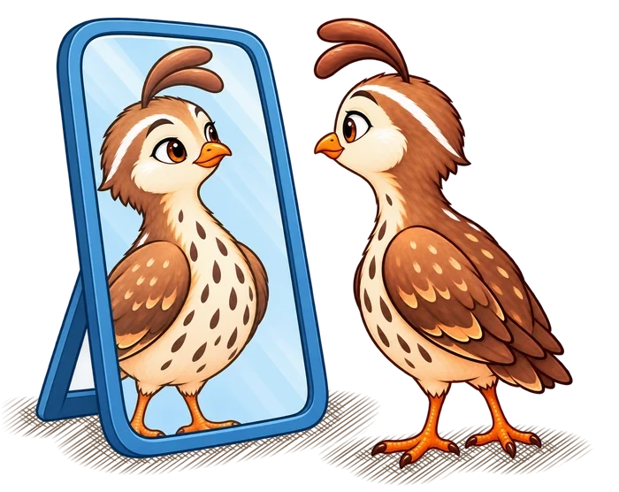

Точечные группы симметрии
Выберите группу. Модель вращается мышью или пальцем. Справа — классы операций с анимацией, таблица характеров с орбиталями центрального атома, подсчёт Γ₃N по неподвижным атомам, колебания молекулы и таблица умножения. Внизу — как группа понижается при замещении или искажении и куда переходят её классы.
Что нужно понять
- Точечная группа — это набор всех операций симметрии молекулы; её находят по элементам симметрии (схема Шёнфлиса).
- Сопряжённые операции образуют класс; неприводимых представлений столько же, сколько классов.
- Характеры неприводимых представлений показывают, как при операциях группы ведут себя орбитали, колебания и функции x, y, z.
- Формула приведения отвечает на вопросы «сколько и каких»: колебаний, SALC, подуровней при расщеплении.
- Характеры представления, натянутого на орбитали лигандов, — числа лигандов, оставшихся на месте; формула редукции раскладывает его на неприводимые, а проекционный оператор даёт SALC.
Границы модели: точная теория групп для жёсткой молекулы
- Что вычисляется
- Операции, классы, характеры, разложение Γ3N, понижение симметрии.
- Какие приближения приняты
- Идеальная равновесная геометрия; молекула жёсткая. Оси выбраны так, что молекула H₂O лежит в плоскости xz; в соглашении Малликена (плоскость yz, как на странице «Нормальные колебания») обозначения B₁ и B₂ меняются местами.
- Какой вывод можно сделать
- Правила отбора отвечают на вопрос «да или нет», но не дают интенсивностей.
Как определить точечную группу — пошаговый алгоритм
Рассматривайте молекулу целиком в заданной конформации. Операция должна совместить атомы с атомами того же вида. Алгоритм следует вашим ответам и не проверяет геометрию автоматически.
Своя молекула: определить точечную группу
В библиотеке страницы больше 350 молекул — их список по точечным группам в каталоге ниже. Любую другую молекулу можно найти в PubChem по английскому названию или задать координатами атомов.
Каталог молекул по точечным группам
Вставить координаты (формат XYZ, Å)
Подойдут файлы .xyz из Avogadro, ORCA, Gaussian и других программ: первая строка — число атомов, вторая — комментарий, дальше строки «элемент x y z». Первые две строки можно не вставлять.
Понижение симметрии
Операция остаётся в группе, только если после неё изменённая молекула совпадает сама с собой. Поэтому новая группа всегда подгруппа исходной, а каждый её класс целиком лежит внутри одного из старых классов.
Сравнить операции до и после изменения
Приводимое представление и SALC
Орбитали лигандов (1s водорода, σ-орбитали галогенов) переходят друг в друга при операциях симметрии. Таблица характеров группы, представление Γ на этих орбиталях, его разложение по формуле редукции и симметризованные комбинации (SALC), полученные проекционным оператором.
Проверьте свои знания
Задания по странице: выполните действие на странице и выберите ответ — он проверится сразу.
Откройте Oh, вкладку «Классы». Почему 3C₂ (= C₄²) и 6C₂ — разные классы, если это одинаковые повороты на 180°?
Oh → «удлинение по оси z». Во что переходит класс 3C₂?
Td (CH₄), вкладка «Счётчики Γ». Сколько полос будет в ИК-спектре и сколько линий в спектре КР?
C3v, вкладка «Умножение». Сравните клетки C₃·σv и σv·C₃. Что они показывают?
D4h ([PtCl₄]²⁻), «Таблица характеров». Какая d-орбиталь относится к b1g, а какая к b2g, и от чего это зависит?
Блок «Приводимое представление и SALC»: на какие неприводимые представления раскладываются 1s-орбитали водородов CH₄?